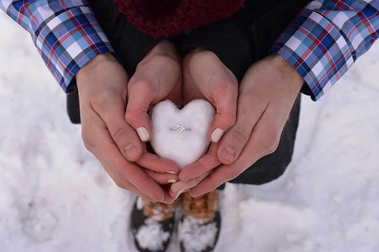
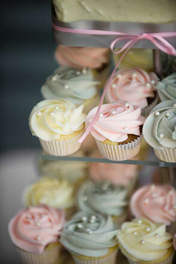

- 
Engagements

Black and White

Backlighting adds drama

You choose what you want
Welcome to Special Day Photography !
We specialize in documenting life's joys, so you can just relax and enjoy the moment. Trust us with any significant occasion, no matter the size.
Our speciality is Weddings, but we also love:
- Corporate Events
- Engagements
- Family Portraits
- Boudoir
- Real Estate
We look forward to capturing your memories so they always at your fingertips.
Check out what our customers had to say :
Kenji & Yuki Ono
"Tracey was such an amazing photographer. She was extremely down to earth and easy going, she really knows how to capture the most beautiful moments between husband and wife on camera. Our photos came out looking incredible and if you are you looking for the most stress free experience, you found it with Special Day Photography! Thank you Tracey and the entire Special Day staff."
Jeff & Sydney Meyer
"My goodness, Tracey is pure MAGIC! My husband and I couldn't say enough about how wonderful our whole experience was from booking, to creating the timeline, to the day of, to receiving our images... it was all just right. Tracey was so patient and understanding from the very beginning! The day of, her presence contributed to the euphoricness of our day. She captured such blissfully subtle moments that we will forever cherish. Truth be told, I don't think a day has gone by since we received our wedding photos that we haven't looked at them! Tracey, you are truly so talented and we will forever be grateful for you sharing your talent in documenting the most special day of our lives!"
Jesse & Taylor Ochs
"Our photographers were Tracey and Jeff. Tracey was my best friend's photographer in 2015, so I knew we were gonna be in good hands. We chatted with Tracey via email and phone prior to our wedding to share our vision of what we were looking for and what moments we specifically wanted captured. Tracey was on board and she's obviously a great listener because she delivered on all of our desires! Tracey and Jeff are an amazing duo. We booked them for nine hours and they arrived on time and immediately got to work. There are photos that we have that left us speechless...they both have a great eye for amazing pictures and art. We even wonder how they photographed some of the photos when we didn't even know they were there. We hope they enjoyed our presence as much as we enjoyed theirs...
Our only regret is not asking Mike and Emma stay for the last hour to capture the remainder of the night. We are confident the extra overtime spent would have been worth the expense...
Photography was our most important priority when booking our wedding vendors. Definitely glad we booked True Photography for our special day. Best wedding investment by far since photos will last a lifetime
Thank you True Photography team!!"
Karl Kyler, Sand Piper Realty
"Special Day Photography and the team are incredible. We have been using them for years and this year alone we have completed more than 30 photo shoots for our business. They have a solid team of great professionals. Tracey's partners, including her husband Jeff, are all great. We have shot 7 DREAM Homes ads together and she works with our company regularly (which primarily specializes in high end homes needing the best photography). I can tell you that our entire brokerage swears by her and we sell a lot of real estate in the county. I am so fortunate to be able to have Tracey as a RE photographer and I hope to keep it up for years to come! HIGHLY RECOMMEND!"
- >


Beautiful Cake
- 
Cupcakes for the crowd!

JUST MARRIED!!